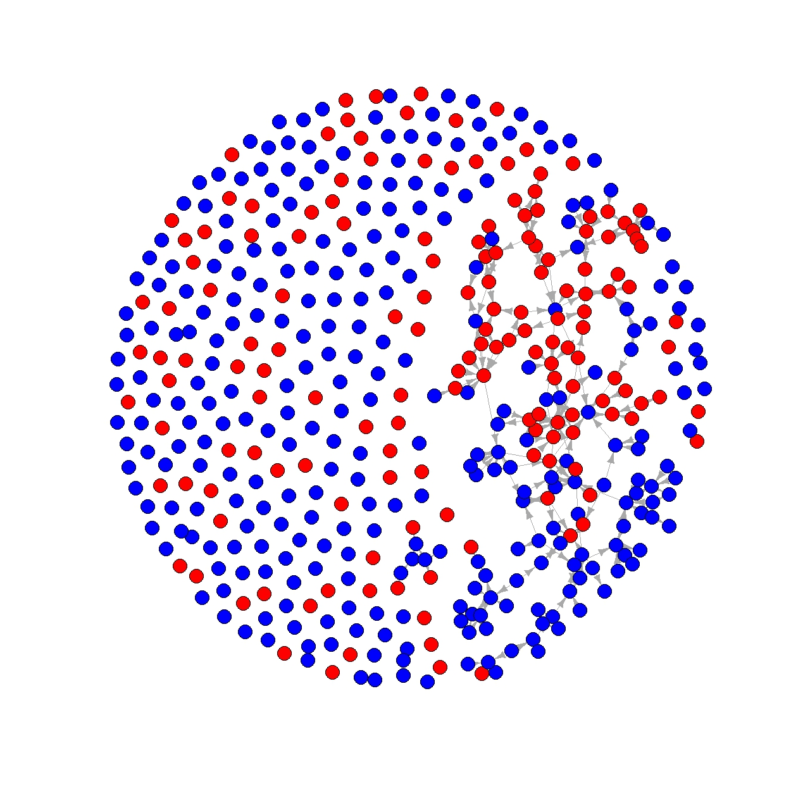
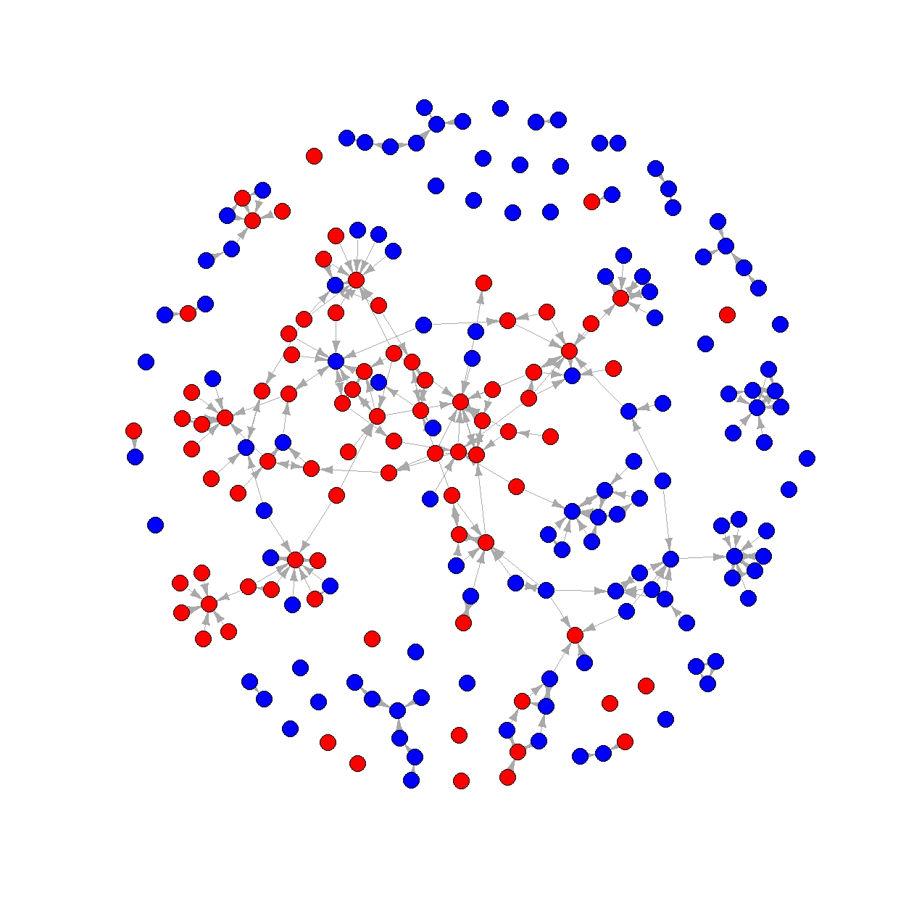
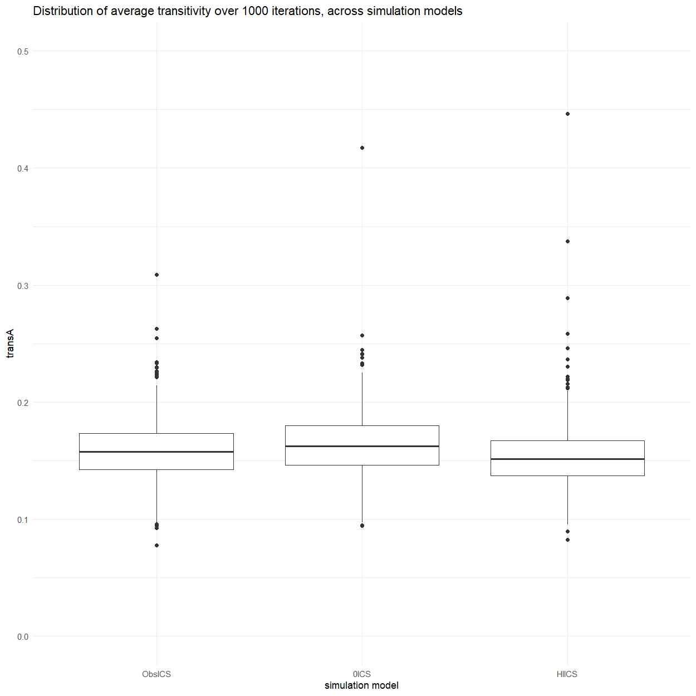

Three main steps will be taken to ascertain whether sociologists tend
to collaborate with colleagues affiliated with the same graduate school.
First, the network will be descriptively analysed using several network
statistics and visualisations. This should give a first indication of
the prevalence of collaborations between sociologists from different
graduate schools, the amount of triads and transitive triads and the
structure and composition of the network.
Secondly, successive Stochastic Actor Oriented Models (SAOM) are
estimated using RSiena to test whether the creation and maintenance of
collaboration ties between the first and second timepoint is influenced
by a preference for collaboration with alters with the same graduate
school affiliation. The first of these models includes only the default
effects of density and reciprocity, the second model adds the ICS
affiliation variable, the third adds the control variables. The fourth
model build upon the third by adding structural effects until a
satisfactory goodness of fit is achieved. The fifth model serves as a
robustness check, it includes the two separate ICS affiliation variables
and serves to check the assumption that both variables have a similar
effect, as this is assumed in the theory.
Thirdly, simulations are used to test hypothesis two, that the
preference to work with alters affiliated with the same graduate school
significantly contributes to clustering in the network. The simulations
fix the effects of all variables at their observed estimates from model
four and uses these parameters to simulate how to observed network at
wave one would change given the effects of the variables. By comparing
the two transitivity scores of a simulation with the observed effect of
ICS affiliation two others, one where the effect of ICS affiliation is
set to zero and one where it is doubled, the simulations will be used to
check whether significantly more clustering occurs if the effect of ICS
affiliation is doubled and significantly less when it is absent. This
way, the hypothesis regarding the network level effect of the individual
preference to collaborate within ones graduate school is explicitly
tested.
Network
visualisations
In order to get a first impression of our collaboration network, it
is visualised in the form of three graphs. In each graph, sociologists
affiliated with ICS are shown as red nodes, those not affiliated with
ICS are coloured blue. No further variables are included in the
visualisations. The first graph is a visualisation of wave 1, which
shows a considerable amount of isolates. Out of the 458 nodes, 158 had a
tie in wave 1, leaving 300 isolates. There are fewer isolates in wave 2,
with 213 nodes having a tie, this there were 245 isolates in this wave.
The amount of isolates makes it more difficult to see any possible
clusters in the network, which is why both waves are also visualised
without the isolates.
The second graph shows wave 1 without isolates, here it can be seen that
there are groups of collaborating sociologists, some of these groups are
homogenous when it comes to whether their members are associated with
ICS, while other groups are mixed. If there is no preference for same
graduate school cooperation at all, the expectation would be that
approximately one third of the sociologists in each group would be
affiliated with ICS, since that is their proportion of the sociologists
in the data. However, most groups in the graph seem to be made up of a
majority of either sociologists which are or are not affiliated, with
only one or two from the other group. This grants the impression that
the expected clustering may be present, but it does not exclude that it
is caused by sociologists collaborating with colleagues at their own
university, which are fairly homogenous in whether they are ICS
affiliated or not. The third graph shows the collaboration network in
wave 2, which displays a similar pattern. Also noteworthy is that there
are several fully homogenous groups of sociologists who are not
affiliated with ICS, but groups with majority ICS affiliated
sociologists frequently seem to include multiple non affiliates.
Overall, the visualisations of both waves show patterns which do not
clearly prove or disprove the hypotheses. Further analysis is required
to confirm or deny the hypotheses.
Code used for making the graphs
#Visualising the network
#Only wave 1 with isolates
netvis0 <- igraph::graph_from_adjacency_matrix(
sndata1$nets[1,,],
mode = c("directed"),
weighted = NULL,
diag = FALSE,
add.colnames = NULL,)
plot(netvis0,
vertex.color = ifelse(df_egoF$icsAny == 1, "red", "blue"),
vertex.label = NA,
vertex.size = 5,
edge.width = 0.2,
edge.arrow.size =0.2)
#Without isolates
#Wave 1
noisolates1 = rowSums(sndata1$nets[1,,]) > 0
netNiso1 = sndata1$nets[1,noisolates1,noisolates1]
dfNiso1 = df_egoF[noisolates1, ]
netvis1 <- igraph::graph_from_adjacency_matrix(
netNiso1,
mode = c("directed"),
weighted = NULL,
diag = FALSE,
add.colnames = NULL,)
plot(netvis1,
vertex.color = ifelse(dfNiso1$icsAny == 1, "red", "blue"),
vertex.label = NA,
vertex.size = 5,
edge.width = 0.2,
edge.arrow.size =0.2)
#Wave 2
noisolates2 = rowSums(sndata1$nets[2,,]) > 0
netNiso2 = sndata1$nets[2,noisolates2,noisolates2]
dfNiso2 = df_egoF[noisolates2, ]
netvis2 <- igraph::graph_from_adjacency_matrix(
netNiso2,
mode = c("directed"),
weighted = NULL,
diag = FALSE,
add.colnames = NULL,)
plot(netvis2,
vertex.color = ifelse(dfNiso2$icsAny == 1, "red", "blue"),
vertex.label = NA,
vertex.size = 5,
edge.width = 0.2,
edge.arrow.size =0.2)
#Amount of non isolates per wave
dim(netNiso1)
dim(netNiso2)
Graph 1. wave 1
with isolates

Graph 2. wave 1
without isolates

Graph 3. wave 2
without isolates

RSiena models
As described in the methods section, the main test of hypothesis 1
consists of several stochastic actor oriented models carried out using
the RSiena package. The successive models are intended to be compared to
one another to check if the added variables of each subsequent model
improve the convergence and goodness of fit. The models are now
presented in order. The overall maximum convergence ratios and goodness
of fit as measured by Mahalanobis distance for the indegree
distribution, outdegree distribution and triad census for each model is
shown in table 3. The top row of table 3 (‘Target’) shows the desired
minimum value for each statistic, these are not hard requirements, but
reaching these values is strongly preferable since they indicate that
the model corresponds well to the observed data (Ruth M. Ripley 2025).
For each model, tables 1 and 2 display the parameter estimates (theta),
standard errors (SE) and t-values for the covariate and structural
effects, respectively. The parameter estimates indicate the weight given
to a variable in the evaluation function of actors in the network, as
explained in the methods section. These parameter estimates are the main
outcomes of interest, since they give an indication of whether the
variables were of importance in the changes in ties that occurred
between waves 1 and 2. The estimates of one effect are not comparable to
the estimates of another because they are dependent on the scale of the
variables as well as correlations between variables, so the estimates
only serve to give a rough indication of whether an effect mattered. The
standard errors are also included because they are used to determine the
statistical significance of the effects, a t-value can be calculated to
by dividing the parameter estimate by its standard error, this t-value
then serves as an indicator for significance (Ruth M. Ripley 2025). The decision rule for the
analysis is that an effect must be significant at the α = 0.05 level,
which corresponds to an absolute t-value of 2 or greater (Ruth M. Ripley 2025).
Modelling results
summary
#Tables with summarised model results
#Defining function again because it doesnt work otherwise
require(tidyr)
## Loading required package: tidyr
#fshowdf: To print objects (tibbles / data.frame) nicely on screen in .rmd
fshowdf <- function(x, ...) {
knitr::kable(x, digits = 2, "html", ...) %>%
kableExtra::kable_styling(bootstrap_options = c("striped", "hover")) %>%
kableExtra::scroll_box(width = "100%", height = "300px")
}
#Table of convergence and fit statistics
model <- c("Target", "Model 1", "Model 2", "Model 3", "Model 4", "Model 5", "Model 6")
conv <- c('<0.25', 0.048, 0.377, 0.199, 0.323, 0.209, 1.119)
indegreegof <- c('>0.05', 0, 0.007, 0.006, 0.024, 0.010, 0.037)
outdegreegof <- c('>0.05', 0.003, 0.007, 0.003, 0.069, 0.062, 0.075)
triadgof <- c('>0.05', 0, 0.004, 0.003, 0.093, 0.014, 0.093)
convGOFdf <- data.frame(Model=model,Max.Conv=conv,
IndegreeGOF=indegreegof,OutdegreeGOF=outdegreegof,
TriadGOF=triadgof)
#Combined table of results for structural variables
model2<-c("Model 1", "Model 2", "Model 3", "Model 4", "Model 5", "Model 6")
densityEst<-c(-3.82, -3.97, -4.62, -3.26, -3.11, -2.61)
densitySe<-c(0.08, 0.18, 0.29, 0.82, 1.44, 0.77)
densityT<-c(-46.54, -21.69, -15.41, -3.96, -2.16, -3.39)
recipEst<-c(3.25, 2.06, 1.88, 2.58, 2.55, 2.69)
recipSe<-c(0.19, 0.21, 0.21, 0.36, 0.31, 0.50)
recipT<-c(17.21, 10.07, 9.11, 7.17, 8.24, 5.39)
transtrEst<-c(' ', 1.11, 0.98, 1.51, 1.55, 1.71)
transtrSe<-c(' ', 0.14, 0.14, 0.27, 0.39, 0.43)
transtrT<-c(' ', 8.05, 7.12, 5.68, 3.99, 3.96)
inpopEst<-c(' ', 0.17, 0.17, 0.19, 0.18, 0.19)
inpopSe<-c(' ', 0.04, 0.06, 0.04, 0.11, 0.04)
inpopT<-c(' ', 4.43, 2.79, 4.64, 1.58, 4.55)
outactEst<-c(' ', ' ', ' ', -0.20, -0.22, -0.29)
outactSe<-c(' ', ' ', ' ', 0.11, 0.18, 0.13)
outactT<-c(' ', ' ', ' ', -1.90, -1.19, -2.35)
inactEst<-c(' ', ' ', ' ', -0.56, -0.59, -0.71)
inactSe<-c(' ', ' ', ' ', 0.26, 0.30, 0.45)
inactT<-c(' ', ' ', ' ', -2.17, -1.98, -1.59)
isoEst<-c(' ', 4.24, 4.09, 5.49, 5.74, 5.82)
isoSe<-c(' ', 0.78, 0.68, 1.11, 2.45, 0.85)
isoT<-c(' ', 5.43, 5.99, 4.97, 2.34, 6.85)
strucResultdf<-data.frame(Model=model2, DensityEst=densityEst,DensitySE=densitySe,DensityT=densityT,
RecipEst=recipEst,RecipSE=recipSe,RecipT=recipT,
TransEst=transtrEst,TransSE=transtrSe,TransT=transtrT,
InpopEst=inpopEst,InpopSE=inpopSe,InpopT=inpopT,
OutactEst=outactEst,OutactSE=outactSe,OutactT=outactT,
InactEst=inactEst,InactSE=inactSe,InactT=inactT,
IsolEst=isoEst,IsolSE=isoSe,IsolT=isoT)
#Covariate estimates, standard errors and t statistics
model3<-c('Model 2', 'Model 3', 'Model 4', 'Model 5', 'Model 6')
anyICSest<-c(0.41, 0.21, 0.19, 0.19, ' ')
anyICSse<-c(0.10, 0.12, 0.13, 0.11, ' ')
anyICSt<-c(4.12, 1.79, 1.49, 1.70, ' ')
affICSest<-c(' ', ' ', ' ', ' ', -0.05)
affICSse<-c(' ', ' ', ' ', ' ', 0.14)
affICSt<-c(' ', ' ', ' ', ' ', -0.36)
gradICSest<-c(' ', ' ', ' ', ' ', -0.13)
gradICSse<-c(' ', ' ', ' ', ' ', 0.19)
gradICSt<-c(' ', ' ', ' ', ' ', -0.68)
uniest<-c(' ', 1.18, 1.21, 1.21, 1.28)
unise<-c(' ', 0.11, 0.13, 0.11, 0.11)
uniT<-c(' ', 10.35, 9.16, 11.29, 11.29)
funcest<-c(' ', 0.43, 0.41, 0.42, 0.39)
funcse<-c(' ', 0.23, 0.26, 0.23, 0.33)
funcT<-c(' ', 1.89, 1.61, 1.81, 1.19)
genest<-c(' ', 0.05, 0.06, 0.06, 0.07)
gense<-c(' ', 0.09, 0.12, 0.11, 0.12)
genT<-c(' ', 0.49, 0.53, 0.54, 0.59)
covarResultdf<-data.frame(Model=model3,ICSest=anyICSest,ICSse=anyICSse,ICSt=anyICSt,
UnivEst=uniest,UnivSE=unise,UnivT=uniT,
FunctEst=funcest,FunctSE=funcse,FunctT=funcT,
GendEst=genest,GendSE=gense,GendT=genT,
AffilICSest=affICSest,AffilICSse=affICSse,AffilICSt=affICSt,
GradICSest=gradICSest,GradICSse=gradICSse,GradICSt=gradICSt)
fshowdf(covarResultdf)
|
Model
|
ICSest
|
ICSse
|
ICSt
|
UnivEst
|
UnivSE
|
UnivT
|
FunctEst
|
FunctSE
|
FunctT
|
GendEst
|
GendSE
|
GendT
|
AffilICSest
|
AffilICSse
|
AffilICSt
|
GradICSest
|
GradICSse
|
GradICSt
|
|
Model 2
|
0.41
|
0.1
|
4.12
|
|
|
|
|
|
|
|
|
|
|
|
|
|
|
|
|
Model 3
|
0.21
|
0.12
|
1.79
|
1.18
|
0.11
|
10.35
|
0.43
|
0.23
|
1.89
|
0.05
|
0.09
|
0.49
|
|
|
|
|
|
|
|
Model 4
|
0.19
|
0.13
|
1.49
|
1.21
|
0.13
|
9.16
|
0.41
|
0.26
|
1.61
|
0.06
|
0.12
|
0.53
|
|
|
|
|
|
|
|
Model 5
|
0.19
|
0.11
|
1.7
|
1.21
|
0.11
|
11.29
|
0.42
|
0.23
|
1.81
|
0.06
|
0.11
|
0.54
|
|
|
|
|
|
|
|
Model 6
|
|
|
|
1.28
|
0.11
|
11.29
|
0.39
|
0.33
|
1.19
|
0.07
|
0.12
|
0.59
|
-0.05
|
0.14
|
-0.36
|
-0.13
|
0.19
|
-0.68
|
fshowdf(strucResultdf)
|
Model
|
DensityEst
|
DensitySE
|
DensityT
|
RecipEst
|
RecipSE
|
RecipT
|
TransEst
|
TransSE
|
TransT
|
InpopEst
|
InpopSE
|
InpopT
|
OutactEst
|
OutactSE
|
OutactT
|
InactEst
|
InactSE
|
InactT
|
IsolEst
|
IsolSE
|
IsolT
|
|
Model 1
|
-3.82
|
0.08
|
-46.54
|
3.25
|
0.19
|
17.21
|
|
|
|
|
|
|
|
|
|
|
|
|
|
|
|
|
Model 2
|
-3.97
|
0.18
|
-21.69
|
2.06
|
0.21
|
10.07
|
1.11
|
0.14
|
8.05
|
0.17
|
0.04
|
4.43
|
|
|
|
|
|
|
4.24
|
0.78
|
5.43
|
|
Model 3
|
-4.62
|
0.29
|
-15.41
|
1.88
|
0.21
|
9.11
|
0.98
|
0.14
|
7.12
|
0.17
|
0.06
|
2.79
|
|
|
|
|
|
|
4.09
|
0.68
|
5.99
|
|
Model 4
|
-3.26
|
0.82
|
-3.96
|
2.58
|
0.36
|
7.17
|
1.51
|
0.27
|
5.68
|
0.19
|
0.04
|
4.64
|
-0.2
|
0.11
|
-1.9
|
-0.56
|
0.26
|
-2.17
|
5.49
|
1.11
|
4.97
|
|
Model 5
|
-3.11
|
1.44
|
-2.16
|
2.55
|
0.31
|
8.24
|
1.55
|
0.39
|
3.99
|
0.18
|
0.11
|
1.58
|
-0.22
|
0.18
|
-1.19
|
-0.59
|
0.3
|
-1.98
|
5.74
|
2.45
|
2.34
|
|
Model 6
|
-2.61
|
0.77
|
-3.39
|
2.69
|
0.50
|
5.39
|
1.71
|
0.43
|
3.96
|
0.19
|
0.04
|
4.55
|
-0.29
|
0.13
|
-2.35
|
-0.71
|
0.45
|
-1.59
|
5.82
|
0.85
|
6.85
|
fshowdf(convGOFdf)
|
Model
|
Max.Conv
|
IndegreeGOF
|
OutdegreeGOF
|
TriadGOF
|
|
Target
|
<0.25
|
>0.05
|
>0.05
|
>0.05
|
|
Model 1
|
0.048
|
0
|
0.003
|
0
|
|
Model 2
|
0.377
|
0.007
|
0.007
|
0.004
|
|
Model 3
|
0.199
|
0.006
|
0.003
|
0.003
|
|
Model 4
|
0.323
|
0.024
|
0.069
|
0.093
|
|
Model 5
|
0.209
|
0.01
|
0.062
|
0.014
|
|
Model 6
|
1.119
|
0.037
|
0.075
|
0.093
|
Null model
The first model only includes density and reciprocity effects and
serves only as a null model. The density and reciprocity effects are
included by default in RSiena models. As can be seen in table 3, the
overall maximum convergence ratio of model 1 is 0.048, which is below
the maximum target value of 0.25, so the model converges quite well.
However, the goodness of fit statistic for neither of the three assessed
network statistics meets the target value of 0.05 or greater. These
results indicate that the null model is insufficient for explaining the
observed tie changes between waves 1 and 2, which is not surprising, but
is still useful as a benchmark for the following models.
Model 1 code
#Create main algorithm
algoMain<-sienaAlgorithmCreate()
#Now to specify the models
#Model 1: the null model with only density and reciprocity
effects1<-getEffects(collabnet1)
#Estimate model 1
testEstimate1<-siena07(algoMain,data=collabnet1,effects=effects1,returnDeps=TRUE)
testEstimate1
#Goodness of fit testing for model 1
model1gof1 <- sienaGOF(testEstimate1, IndegreeDistribution, verbose = FALSE, join = TRUE, varName = "net")
model1gof2 <- sienaGOF(testEstimate1, OutdegreeDistribution, verbose = FALSE, join = TRUE, varName = "net")
model1gof3 <- sienaGOF(testEstimate1, TriadCensus, verbose = FALSE, join = TRUE, varName = "net")
plot(model1gof1)
plot(model1gof2)
plot(model1gof3)
#t-value calculation to check significance of effects in model 1
result1df<-cbind.data.frame(testEstimate1$theta,testEstimate1$se)
names(result1df)<-c('theta','se')
result1df$ttest<-result1df$theta/result1df$se
First test without
controls
The second model adds the effect of tendency to collaborate with
alter with the same ICS affiliation (‘ICS affiliation’), which is the
main covariate of interest for testing hypothesis 1. The model also adds
the transitive triplets and indegree popularity structural effects which
are recommended in the manual for RSiena (Ruth M.
Ripley 2025). This model serves as a first indicator of whether
hypothesis 1 may have merit, but does not yet include the control
variables which would allow for a more conclusive test. Though it is not
yet conclusive, table 1 shows that the ICS affiliation variable
(referred to as ‘ICSest’ in table 1) does have an effect. It can be
tentatively concluded from this that sociologists are more likely to
create and maintain collaborative ties to colleagues if both or neither
of them are affiliates or graduates of ICS, compared to when one of them
is affiliated and the other is not. This is further substantiated by the
t-value (t = 4.12), which indicates that the statistical significance of
the effect is well below the chosen threshold for significance (p <
0.05). Model 2 shows worse overall maximum convergence, but improvement
in goodness of fit compared to model 1. The overall maximum convergence
exceeds the target maximum value of 0.25, indicating that the models
convergence is worse than that of model 1 and overall unsatisfactory.
The target values for the three network statistics are not met either,
but model 2 does get closer than model 1 did. The addition of the
transitive triplets and indegree popularity effects likely contributed
to this improvement.
Model 2 code
#Model 2: adds the main ego level covariate 'icsany' and the structural effects
effects2<-getEffects(collabnet1)
#Included effects
effects2<-includeEffects(effects2,isolateNet,inPop,transTrip)
effects2<-includeEffects(effects2,sameX,name='net',interaction1='icsanyD')
#Estimate model 2
testEstimate2<-siena07(algoMain,data=collabnet1,effects=effects2,returnDeps=TRUE)
testEstimate2
#Goodness of fit testing for model 2
model2gof1 <- sienaGOF(testEstimate2, IndegreeDistribution, verbose = FALSE, join = TRUE, varName = "net")
model2gof2 <- sienaGOF(testEstimate2, OutdegreeDistribution, verbose = FALSE, join = TRUE, varName = "net")
model2gof3 <- sienaGOF(testEstimate2, TriadCensus, verbose = FALSE, join = TRUE, varName = "net")
plot(model2gof1)
plot(model2gof2)
plot(model2gof3)
#t-value calculation to check significance of effects in model 2
result2df<-cbind.data.frame(testEstimate2$theta,testEstimate2$se)
names(result2df)<-c('theta','se')
result2df$ttest<-result2df$theta/result2df$se
Main models testing
hypothesis one
The third, fourth and fifth model will be treated jointly, since they
have the same implication with regard to hypothesis 1. Model 3 adds the
effects of the three control variables; tendency to collaborate with
alters at ego’s own university (‘university affiliation’), tendency to
avoid collaboration with alters with the same function as ego
(‘function’) and tendency to collaborate with alters with the same
gender as ego (‘gender’). The intent is to check whether the sameX
effect of ICS affiliation remains significant if the controls are
included in the model. As can be seen in table 1, this is arguably not
the case. In models 3, 4 and 5, t-values of the ICS affiliation effects
are above the chosen limit for significance (t >= 2, p < 0.05),
meaning that under the decision rule set before the analysis was carried
out, we must conclude that there is no significant effect and hypothesis
1 is tentatively rejected. Tentatively, because it should be mentioned
that the effects of ICS affiliation are still significant at the α =
0.10 level. This is not certainly not cause to consider the hypothesis
confirmed either, but the absence of a tendency to collaborate with
others affiliated with the same graduate school cannot be stated with
absolute certainty. This will be elaborated upon in the
conclusion.
With regard to the effects of the control variables, the gender and
function effects are both insignificant in all three models, as seen in
table 1. Especially the gender effect is far from significant, which
shows that there seems to be no tendency to collaborate with alters who
share the same gender as ego. The t-value of the function effect is
below the minimum value that would be considered significant, but as
with ICS affiliation, it is significant at the α = 0.1 level. As such,
whether or not sociologists have a tendency not to collaborate with
colleagues with the same function as themselves is not quite certain,
which is further covered in the conclusion. Consistently with prior
literature (Tobias H. Stark 2020), the
effect of university affiliation is unambiguously important, based on
the high t-values. This indicates that working at the same university
makes it much more likely for two sociologists to collaborate. This
strong tendency to collaborate within universities combined with the
fact that graduate schools are linked to the sociology departments of
specific universities likely explains why a significant effect of ICS
affiliation was found in model 2, sociologists do collaborate more with
others affiliated with the same graduate school, but in large part
because they are much more likely to work at the same departments.
While the conclusions drawn about the covariate effects are the same
across models 3, 4 and 5, the convergence and fit differ between the
models. Model 3 is the original intended test of hypothesis 1, models 4
and 5 are intended to improve the convergence and fit of model 3. Model
4 is included because model 3 suffers from poor fit, the Mahalanobis
distance of the indegree distribution, outdegree distribution and triad
census is far below the preferred minimum of 0.05 suggested (Ruth M. Ripley 2025). This means that these
three network characteristics of the model do not correspond closely to
those of the observed network at wave 2, which puts into question
whether the parameter estimates are accurate representations of the
actual behaviour of the sociologists. Multiple iterations of model 4
were estimated to test if the goodness of fit improved, the two
structural effects that did improve fit and were thus retained are
indegree activity and oudegree activity. Other effects that were tested
but worsened the fit were: outdegree popularity, the squared version of
indegree popularity and the exclusion of the gender or function control
variables. As can be seen in table 3, adding in- and outdegree activity
effects did substantially improve fit compared to model 3, with model 4
having sufficient goodness of fit with regard to the outdegree
distribution and triad census. However, no statistic was found which
lead to an acceptable goodness of fit for the indegree distribution,
each estimated model consistently overestimated the amount indegrees the
nodes would have. Since no statistic was found which fixed this issue,
sufficient fit for two out of three network statistics was accepted as
being close enough to the desired fit.
Table 3 also shows that while model 4 may have a substantially better
fit than model 3, it also has a worse overall maximum convergence ratio.
The overall maximum convergence of model 4 is 0.323, which exceeds the
maximum acceptable value of 0.25. Model 5 is estimated to improve upon
this characteristic of model 4. Model 5 contains the same structural and
covariate effects as model 4, but their starting values are set to the
estimated parameter values from model 4. According to the RSiena manual,
this should improve the overall maximum convergence ratio by starting
the estimation at a point closer to the eventual estimated values (Ruth M. Ripley 2025). As expected, model 5 has
considerably better overall maximum convergence than model 4, with
minimal differences in the parameter estimates. The overall maximum
convergence ratio of model 5 is 0.209, which is below the accepted
maximum. Even though the convergence of model 5 is an improvement over
model 4, the model fit is considerably worse. Model 5’s goodness of fit
for the triad census is much lower than model 4’s, so model 5 only has
sufficient fit when looking at the outdegree distribution. In general,
neither model 4 nor 5 is unambiguously better than the other, but the
fact that there is one model with good convergence and one with decent
goodness of fit and that the parameter estimates of the covariate
effects hardly differ between these models does lend additional
confidence that the reported effects are more than artifacts of poorly
specified models.
The results of model 6 serve to moderate this confidence somewhat. Model
6 is a robustness check which includes the sameX effects of being an ICS
affiliated staff member and being an ICS graduate separately, instead of
using the combined variable. Table 1 shows the parameter estimates and
t-values of the two ICS variables. The sameX effects of the two ICS
variables are insignificant, based on the t-values being -0.36 and
-0.68. So even though the combined ICS variable used in the other models
was still significant at α=0.10, the separate variables are not
significant at all, indicating that the tendency to collaborate with
alters with the same ICS affiliation as ego is not present unless the
two ICS variables are estimated as a combined effect. Other notable
features of model 6 are the very poor overall maximum convergence ratio
of 1.119 and the decent goodness of fit for the outdegree distribution
and triad census. The goodness of fit of model 6 is considerably better
than model 5, but fairly similar to model 4, while model 4 does have a
better convergence ratio. Overall, model 6 is not better in convergence
and fit than earlier models, which gives the impression that the
combined ICS variable in models 4 and 5 does not cause poor fit.
Model 3 code
#Model 3: adds the ego level control variables
effects3<-getEffects(collabnet1)
#Included effects
effects3<-includeEffects(effects3,isolateNet,inPop,transTrip)
effects3<-includeEffects(effects3,sameX,name='net',interaction1='genderD')
effects3<-includeEffects(effects3,sameX,name='net',interaction1='universityN')
effects3<-includeEffects(effects3,sameX,name='net',interaction1='icsanyD')
effects3<-includeEffects(effects3,unequalX,name='net',interaction1='functionO')
#Estimate model 3
testEstimate3<-siena07(algoMain,data=collabnet1,effects=effects3,returnDeps=TRUE)
testEstimate3
#Goodness of fit testing for model 3
model3gof1 <- sienaGOF(testEstimate3, IndegreeDistribution, verbose = FALSE, join = TRUE, varName = "net")
model3gof2 <- sienaGOF(testEstimate3, OutdegreeDistribution, verbose = FALSE, join = TRUE, varName = "net")
model3gof3 <- sienaGOF(testEstimate3, TriadCensus, verbose = FALSE, join = TRUE, varName = "net")
plot(model3gof1)
plot(model3gof2)
plot(model3gof3)
#t-value calculation to check significance of effects in model 3
result3df<-cbind.data.frame(testEstimate3$theta,testEstimate3$se)
names(result3df)<-c('theta','se')
result3df$ttest<-result3df$theta/result3df$se
Model 4 code
#Model 4: iteratively improved version of model 3 for better GOF
effects4<-getEffects(collabnet1)
#Included effects
effects4<-includeEffects(effects4,isolateNet,inPop,outAct,inAct,transTrip)
effects4<-includeEffects(effects4,sameX,name='net',interaction1='genderD')
effects4<-includeEffects(effects4,sameX,name='net',interaction1='universityN')
effects4<-includeEffects(effects4,sameX,name='net',interaction1='icsanyD')
effects4<-includeEffects(effects4,unequalX,name='net',interaction1='functionO')
#Estimate model 4
testEstimate4<-siena07(algoMain,data=collabnet1,effects=effects4,returnDeps=TRUE)
testEstimate4
#Goodness of fit testing for model 4
model4gof1 <- sienaGOF(testEstimate4, IndegreeDistribution, verbose = FALSE, join = TRUE, varName = "net")
model4gof2 <- sienaGOF(testEstimate4, OutdegreeDistribution, verbose = FALSE, join = TRUE, varName = "net")
model4gof3 <- sienaGOF(testEstimate4, TriadCensus, verbose = FALSE, join = TRUE, varName = "net")
plot(model4gof1)
plot(model4gof2)
plot(model4gof3)
#t-value calculation to check significance of effects in model 4
result4df<-cbind.data.frame(testEstimate4$theta,testEstimate4$se)
names(result4df)<-c('theta','se')
result4df$ttest<-result4df$theta/result4df$se
Model 5 code
#Model 5: repeated estimation of model 4 with the estimates from model 4 as starting values to improve convergence
effects5<-getEffects(collabnet1)
#Included effects
effects5<-includeEffects(effects5,isolateNet,inPop,outAct,inAct,transTrip)
effects5<-includeEffects(effects5,sameX,name='net',interaction1='genderD')
effects5<-includeEffects(effects5,sameX,name='net',interaction1='universityN')
effects5<-includeEffects(effects5,sameX,name='net',interaction1='icsanyD')
effects5<-includeEffects(effects5,unequalX,name='net',interaction1='functionO')
#Estimate model 5
testEstimate5<-siena07(algoMain,data=collabnet1,effects=effects5,returnDeps=TRUE,prevAns=testEstimate4)
testEstimate5
#Goodness of fit testing for model 5
model5gof1 <- sienaGOF(testEstimate5, IndegreeDistribution, verbose = FALSE, join = TRUE, varName = "net")
model5gof2 <- sienaGOF(testEstimate5, OutdegreeDistribution, verbose = FALSE, join = TRUE, varName = "net")
model5gof3 <- sienaGOF(testEstimate5, TriadCensus, verbose = FALSE, join = TRUE, varName = "net")
plot(model5gof1)
plot(model5gof2)
plot(model5gof3)
#t-value calculation to check significance of effects in model 5
result5df<-cbind.data.frame(testEstimate5$theta,testEstimate5$se)
names(result5df)<-c('theta','se')
result5df$ttest<-result5df$theta/result5df$se
Model 6 code
#Model 6: a robustness check including the two separate ics variables
effects6<-getEffects(collabnet1)
#Included effects
effects6<-includeEffects(effects6,isolateNet,inPop,outAct,inAct,transTrip)
effects6<-includeEffects(effects6,sameX,name='net',interaction1='genderD')
effects6<-includeEffects(effects6,sameX,name='net',interaction1='universityN')
effects6<-includeEffects(effects6,sameX,name='net',interaction1='icsaffilD')
effects6<-includeEffects(effects6,sameX,name='net',interaction1='icsgradD')
effects6<-includeEffects(effects6,unequalX,name='net',interaction1='functionO')
#Estimate model 6
testEstimate6<-siena07(algoMain,data=collabnet1,effects=effects6,returnDeps=TRUE)
testEstimate6
#Goodness of fit testing for model 6
model6gof1 <- sienaGOF(testEstimate6, IndegreeDistribution, verbose = FALSE, join = TRUE, varName = "net")
model6gof2 <- sienaGOF(testEstimate6, OutdegreeDistribution, verbose = FALSE, join = TRUE, varName = "net")
model6gof3 <- sienaGOF(testEstimate6, TriadCensus, verbose = FALSE, join = TRUE, varName = "net")
plot(model6gof1)
plot(model6gof2)
plot(model6gof3)
#t-value calculation to check significance of effects in model 6
result6df<-cbind.data.frame(testEstimate6$theta,testEstimate6$se)
names(result6df)<-c('theta','se')
result6df$ttest<-result6df$theta/result6df$se
RSiena
simulations
Hypothesis 2 will be assessed using simulation models in RSiena.
These models serve to test whether the sameX effect of ICS affiliation
causes an increase in clustering in the network, as measured by global
and average transitivity scores. The simulations take the parameter
estimates from model 4 as starting values, all effects are fixed at
these starting values and the model simulates how the network would
evolve with the given effects instead of estimating the effects
themselves. The test of hypothesis 2 is carried out by manipulating the
effect of ICS affiliation, running simulations with the manipulated
effects and checking if the clustering indicators are higher if the ICS
affiliation effect is made stronger and lower if the ICS affiliation
effect is removed entirely. The two transitivity scores of the three
simulations are compared using boxplots.
Specifying the simulation models and fixing effects
#Now to test whether the network has a significant amount of clustering
#First calculate the global clustering coefficient and transitivity ratio for our network
#Then simulate networks without clustering
#Then see if our values are significantly higher
#Specifying the models to simulate based on the final RSiena model
effectsSim<-effects4
effectsSim<-setEffect(effectsSim,density,initialValue =
testEstimate4$theta[which(testEstimate4$effects$shortName == "density")])
effectsSim<-setEffect(effectsSim,recip,initialValue =
testEstimate4$theta[which(testEstimate4$effects$shortName == "recip")])
effectsSim<-setEffect(effectsSim,transTrip,initialValue =
testEstimate4$theta[which(testEstimate4$effects$shortName == "transTrip")])
effectsSim<-setEffect(effectsSim,inPop,initialValue =
testEstimate4$theta[which(testEstimate4$effects$shortName == "inPop")])
effectsSim<-setEffect(effectsSim,outAct,initialValue =
testEstimate4$theta[which(testEstimate4$effects$shortName == "outAct")])
effectsSim<-setEffect(effectsSim,inAct,initialValue =
testEstimate4$theta[which(testEstimate4$effects$shortName == "inAct")])
effectsSim<-setEffect(effectsSim,isolateNet,initialValue =
testEstimate4$theta[which(testEstimate4$effects$shortName == "isolateNet")])
effectsSim<-setEffect(effectsSim,unequalX,interaction1='functionO',initialValue =
testEstimate4$theta[which(testEstimate4$effects$shortName == "unequalX")])
#The sameX effects were set manually because there are 3, so the syntax used above did not work
effectsSim<-setEffect(effectsSim,sameX,interaction1='universityN',initialValue = 1.34057485)
effectsSim<-setEffect(effectsSim,sameX,interaction1='genderD',initialValue = 0.03853077)
effectsSim<-setEffect(effectsSim,sameX,interaction1='icsanyD',initialValue = 0.30269557)
#Fix effects of all variables
effectsSim$fix[effectsSim$include == TRUE] <- TRUE
#Introduce higher and no effect variations
effectsSim0 <- effectsSimHI <- effectsSim
#Adjust icsanyD effect in alt simulations
effectsSim0 <- setEffect(effectsSim, sameX, interaction1='icsanyD', initialValue = 0, fix = TRUE)
effectsSimHI <- setEffect(effectsSim, sameX, interaction1='icsanyD', initialValue = 0.30269557 * 2, fix = TRUE)
#Make simulation algorithm
iterSim<-1000
algoSim <- sienaAlgorithmCreate(
projname = 'simulation',
cond = FALSE,
useStdInits = FALSE, nsub = 0,
n3 = iterSim,
seed=242452, # seed for replication
simOnly = TRUE)
Simulating
#Carrying out the simulations and storing both transitivity indices for use as clustering indicators
#Make vector to store transitivity
transSimG <- transSimG0 <- transSimGHI <- rep(0, iterSim)
transSimA <- transSimA0 <- transSimAHI <- rep(0, iterSim)
#Simulations using estimated parameters
simObs <- siena07(algoSim, # simulation settings
data = collabnet1, # data
effects = effectsSim,# defined effects and set parameters
returnDeps = TRUE) # return simulated networks
sim0 <- siena07(algoSim, # simulation settings
data = collabnet1, # data
effects = effectsSim0,# defined effects and set parameters
returnDeps = TRUE) # return simulated networks
simHI <- siena07(algoSim, # simulation settings
data = collabnet1, # data
effects = effectsSimHI,# defined effects and set parameters
returnDeps = TRUE) # return simulated networks
Extracting transitivity scores
#Extract transitivity from simulation runs
#Set n
n<-length(collabnet1$nodeSets[[1]])
#Observed model
for (i in 1:iterSim) {
#Create adjacency matrix
adj <- matrix(0, n, n)
edges <- simObs$sims[[i]][[1]][[1]][[1]]
adj[edges[, 1:2]] <- edges[, 3]
#Create igraph object
graphSim <- igraph::graph_from_adjacency_matrix(
adj,
mode = c("directed"),
weighted = NULL,
diag = FALSE,
add.colnames = NULL,)
#Calculate and store global and average transitivity
transSimG[i]<-transitivity(graphSim)
transSimA[i]<-transitivity(graphSim, type='average')
}
#No ICS sameX model
for (i in 1:iterSim) {
#Create adjacency matrix
adj <- matrix(0, n, n)
edges <- sim0$sims[[i]][[1]][[1]][[1]]
adj[edges[, 1:2]] <- edges[, 3]
#Create igraph object
graphSim <- igraph::graph_from_adjacency_matrix(
adj,
mode = c("directed"),
weighted = NULL,
diag = FALSE,
add.colnames = NULL,)
#Calculate and store global and average transitivity
transSimG0[i]<-transitivity(graphSim)
transSimA0[i]<-transitivity(graphSim, type='average')
}
#High ICS sameX model
for (i in 1:iterSim) {
#Create adjacency matrix
adj <- matrix(0, n, n)
edges <- simHI$sims[[i]][[1]][[1]][[1]]
adj[edges[, 1:2]] <- edges[, 3]
#Create igraph object
graphSim <- igraph::graph_from_adjacency_matrix(
adj,
mode = c("directed"),
weighted = NULL,
diag = FALSE,
add.colnames = NULL,)
#Calculate and store global and average transitivity
transSimGHI[i]<-transitivity(graphSim)
transSimAHI[i]<-transitivity(graphSim, type='average')
}
#Summarise for plotting, first global transitivity
simDataG <- data.frame(condition = c(rep("ObsICS", iterSim), rep("0ICS", iterSim), rep("HIICS", iterSim)),
transG = c(transSimG, transSimG0, transSimGHI))
simDataG$condition <- factor(simDataG$condition, levels = c("ObsICS", "0ICS", "HIICS"))
#Then average transitivity
simDataA <- data.frame(condition = c(rep("ObsICS", iterSim), rep("0ICS", iterSim), rep("HIICS", iterSim)),
transA = c(transSimA, transSimA0, transSimAHI))
simDataA$condition <- factor(simDataA$condition, levels = c("ObsICS", "0ICS", "HIICS"))
#Now, thus that
Plotting transitivity of the simulations
#Plotting
transGplot <- ggplot(simDataG, aes(x = condition, y = transG)) +
geom_boxplot() +
labs(title = "Distribution of global transitivity over 1000 iterations, across simulation models",
x = "simulation model",
y = "transG") +
ylim(0,0.5) +
theme_minimal()
transAplot <- ggplot(simDataA, aes(x = condition, y = transA)) +
geom_boxplot() +
labs(title = "Distribution of average transitivity over 1000 iterations, across simulation models",
x = "simulation model",
y = "transA") +
ylim(0,0.5) +
theme_minimal()
#View plots
transGplot
transAplot
Simulation
results
The outcomes of the simulations show a clear rejection of hypothesis
2. For the simulations without an ICS affiliation effect, with the
observed effect and with the doubled effect, the distributions of both
transitivity scores have means which fall well within the second and
third quartiles of the other simulations. This indicates that the
transitivity scores are not affected if the effect of ICS affiliation is
removed or doubled, compared to the observed effect. The prediction of
hypothesis 2 is that the tendency to work with alters affiliated with
the same graduate school as ego would cause clustering at the network
level, this analysis shows that this is not the case. As such,
hypothesis 2 is rejected.
Boxplots of global
transitivity distributions from simulations
